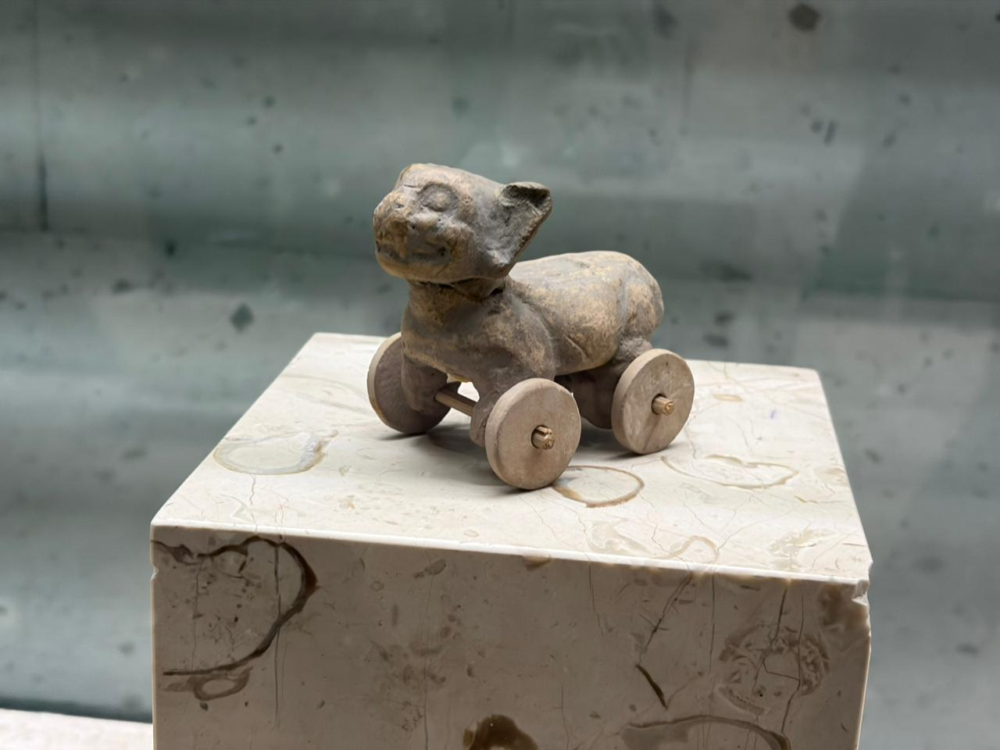

Esta intrigante pieza de cerámica es una efigie animal, comúnmente identificada como un jaguar o un perro. Su importancia arqueológica radica en que demuestra el conocimiento del concepto de la rueda en las culturas mesoamericanas, a pesar de no haber sido utilizada para el transporte a gran escala. A menudo se debate si su función era la de un juguete o un objeto ritual vinculado al inframundo.